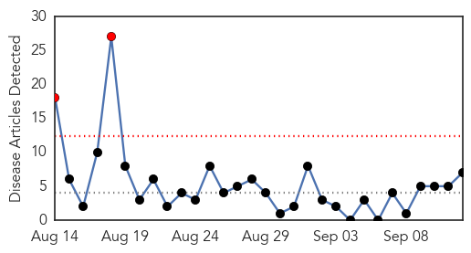
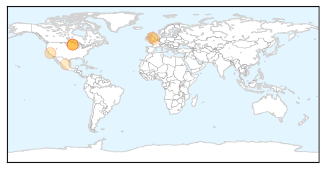

30 Day Trends
Web: 2 alerts, 0 warnings
Twitter: 0 alerts, 0 warnings
Top Articles:
- 0.958
- New vaccine to prevent meningitis to be offered to babies
- 0.928
- Chipotle linked to salmonella outbreak in Minn., health officials say
- 0.917
- Chipotle Linked To Salmonella Outbreak in Minnesota
- 0.858
- New push for Meningitis B vaccines at U.S. colleges and universities -- Health & Wellness -- Sott.net
- 0.839
- Salmonella Outbreak in Minnesota Allegedly Traced to Chipotle Restaurants
- 0.679
- Uttlesford mum whose 4-year-old son died of meningitis urges other parents to vaccinate their kids
- 0.662
- Maryland: Health officials warn public of Listeria risk with Picnic Gourmet cheese spreads
Top Tweets:
-
No tweets found for Sep 12, 2015
Web/News Articles
Tweets

Article Locations
Article Confidences